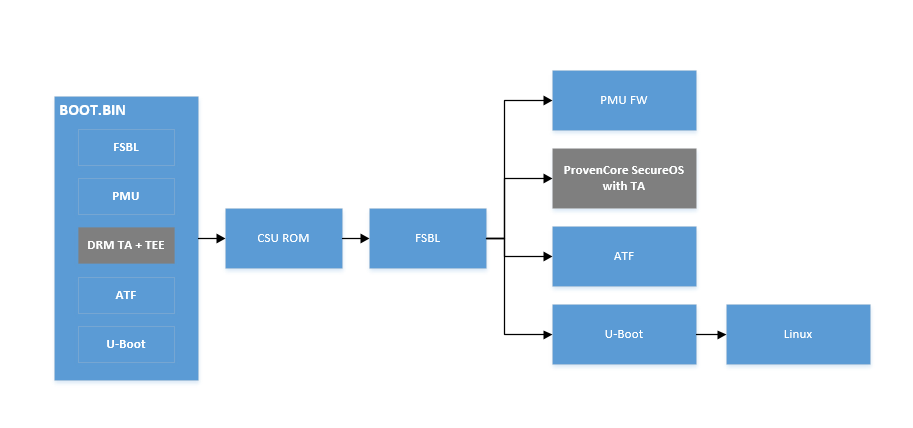
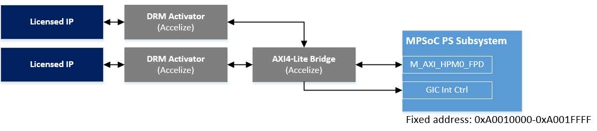
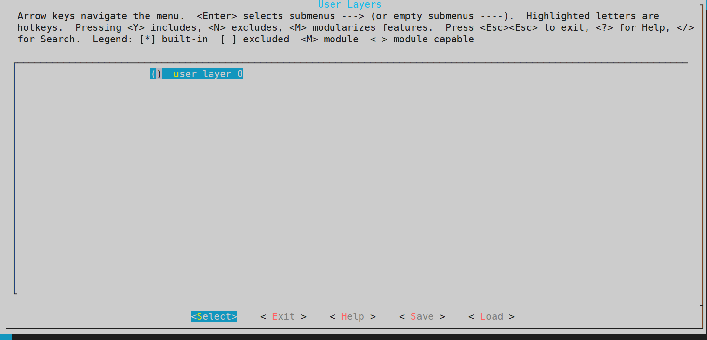
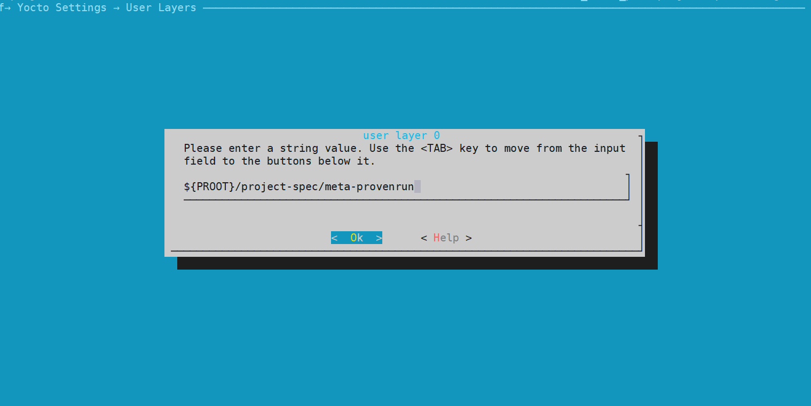
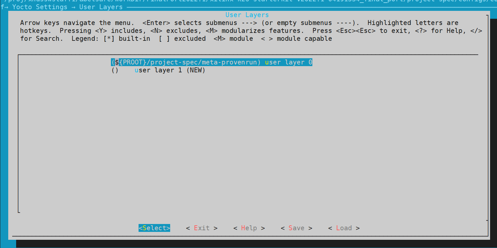
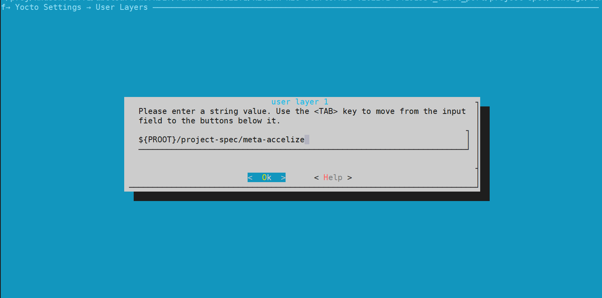
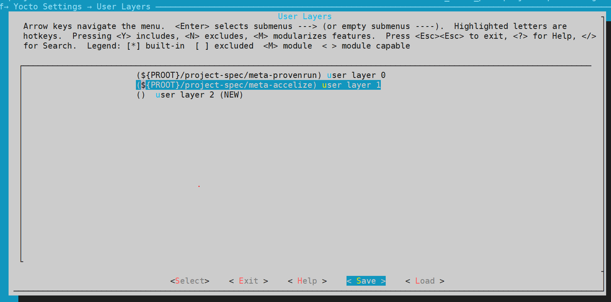
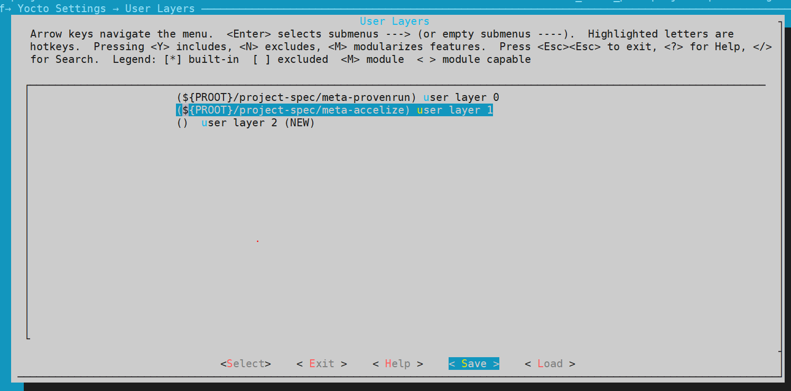

Kria SOM Software Hardware Hybrid DRM Solution¶
Introduction¶
The Accelize software DRM solution consists of a software based DRM controller that runs as a trusted application (TA) running in ProvenCore trusted execution environment (TEE) running next to Linux in the MPSoC APU using Arm TrustZone technology. The DRM Controller TA interacts with the DRM Activators that are integrated in a given PL design. Accelize distributes an integrated binary consolidating the ProvenCore TEE + the DRM Controller TA for supporting the Xilinx App Store (appstore.bin). This document provides an example of how to integrate this into the target platforms including Kria SOM and Starter Kits.
There are three main aspects of the Kria SOM platform that must be modified to integrate the Accelize software DRM Controller:
Inclusion of the integrated TEE + DRM Controller TA (appstore.bin) into the platform BOOT.BIN.
Integration of the ProvenCore TEE Linux driver.
Integration of the PL DRM Activator into a given PL design.
In this tutorial, prebuilt binaries and images are provided for developers to try the DRM test application quickly without having to use any toolchains to generate binaries/images. Then we provide instructions or pointers to re-generate BOOT.bin, Linux wic image, and PL bitstream with DRM solution integrated.
As as of now, the DRM example application drmselftest only have support for KV260. The document will be updated when KR260 is supported.
Using Prebuilt Binaries¶
Boot Firmware¶
The ProvenCore binary pre-integrates the trusted applications (TAs) including the DRM controller, which needs to be integrated into the BOOT.BIN partition that is active in the primary boot device (QSPI). In the diagram below, the grey boxes are the new component added to BOOT.BIN that has the ProvenCore TEE and DRM TA integrated. Upon boot the CSU ROM unpacks BOOT.BIN and FSBL is then used to load the other components as shown in the diagram below.

The integrated TEE, DRM TA and the standard Kria SOM Starter Kit components BOOT.bin binary is available from Accelize can be downloaded following the instructions on the AMD/Xilinx App Store product page.
Update the firmware on your Kria SOM Starter Kit using instructions from Kria SOM Wiki. Note that this boot.bin is backwards compatible - a regular, vanilla PetaLinux image will boot from it as well.
PetaLinux Linux Drivers & DRM Test Application¶
The Linux drivers for ProvenCore and DRM Controller are not pre-built into the Kria SOM Starter Kit PetaLinux images in 2022.1 by default. The linux driver and test applications can be installed at runtime on the default released 2022.1 Petalinux image. Instructions for both can be requested at AMD/Xilinx App Store product page. Instructions to build them into PetaLinux image can be found later in this tutorial.
Test bitstream with PL DRM activator¶
When using the software DRM functionality it must interact with the DRM activator function in the PL design. This interaction is outlined in the following concept diagram and shows that for the reference implementation the activators are accessed via a shared M_AXI_HPM0_FPD port to which the software DRM Controller software needs to align.

An example pre-built firmware (including bitstream, .dtbo, .xclbin and .json file) is provided by Accelize. They can be installed onto a vanilla 2022.1 wic image. Instructions are on the AMD/Xilinx App Store product page.
Running the DRM Test Application¶
There are two test applications associated with DRM application.
First, execute uppercase application from ProvenCore to validate that the Secure OS is functioning correctly. Instructions to test with uppercase can be found on ProvenRun’s github page.
Second, execute drmselftest application from Accelize to validate that the soft DRM controller is interfacing with the DRM activator in the test bitstream correctly. Instructions to test with drmselftest application are on the AMD/Xilinx App Store product page.
Generating Binaries¶
This section shows how to generate binaries to integrate the DRM solution into your applications instead of just using the prebuilt test applications.
Generating App Store Boot Firmware¶
In order to generate a BOOT.BIN with support for the DRM solution, you will first need to download the appstore.bin from the AMD/Xilinx User Portal. Once receiving the appstore.bin from Accelize you must rebuild BOOT.BIN in order to have it loaded at boot time by FSBL. The following steps outline how to integrate the appstore.bin through Xilinx PetaLinux BootGen.
The following instructions assumes that we are working with 2022.1 Kria SOM PetaLinux BSP and 2022.1 tool chain. Download the appropriate BSP, and create workspace:
petalinux-create -t project -s <kria_starterkit>.bsp
cd <kria_starter_kit_petalinux_folder>
petalinux-config --silentconfig
# Get the meta layers for Provenrun and Accelize
cd project-spec/
git clone https://github.com/ProvenRun/meta-provenrun.git -b xilinx-drm-honister
git clone https://github.com/Accelize/meta-accelize.git -b honister
cd ../
Next, add to MACHINE_FEATURES:
# vim project-spec/meta-user/conf/petalinuxbsp.conf and append following
MACHINE_FEATURES:append = " provencore accelize fpga-overlay"
Next, add user layers:
petalinux-config
### Go to Yocto Settings ---> User Layers --->
Add the meta layers as shown below. Note that meta-provenrun needs to be added before meta-accelize.
{$PROOT}/project-spec/meta-provenrun
{$PROOT}/project-spec/meta-accelize




 

ATF¶
The ProvenCore components have been upstreamed to the main ATF repository. The user had enabled this feature by adding provencore to MACHINE_FEATURES in previous steps.
For reference the ATF build flags are:
make -j8 PRELOADED_BL33_BASE=0x8000000 ZYNQMP_CONSOLE=cadence1 SPD=pncd SPD_PNCD_NS_IRQ=51 ZYNQMP_BL32_MEM_BASE=0x70000000 ZYNQMP_BL32_MEM_SIZE=0x10000000 PRELOADED_BL33_BASE=0x80000000 PLAT=zynqmp RESET_TO_BL31=1 bl31
U-Boot¶
As the ProvenCore TEE isolates via XMPU/XPPU configurations a section of the DDR memory as secure memory for its operation it is necessary to identify this range to U-Boot to avoid it trying to make use of the reserved DDR range.
Building of U-Boot with the provencore MACHINE_FEATURE will mark the corresponding ProvenCore TEE address range as reserved.
Update the CMA allocation for boot.scr¶
Due to memory allocation for provencore binary, the memory for CMA region is reduced to 700M
# vim project-spec/meta-user/recipes-bsp/device-tree/files/system-user.dtsi
# update CMA value to 700M. Default value was 900M
bootargs = "earlycon console=ttyPS1,115200 clk_ignore_unused init_fatal_sh=1 cma=700M ";
Temporary Workaround for 2022.1¶
In 2022.1, the following workaround need to be applied to correct the names of test applications:
In components/yocto/layers/meta-petalinux/dynamic-layers/provenrun/recipes-core/images/petalinux-image-common-provencore.inc, correct PROVENCORE_INSTALL to the following:
PROVENCORE_INSTALL = " \
provencore-driver \
libprovencore \
provenrun-uppercase \
provenrun-uppercase-firmware \
"
In components/yocto/layers/meta-petalinux/dynamic-layers/accelize/recipes-core/images/petalinux-image-common-accelize.inc, correct ACCELIZE_INSTALL to the following:
ACCELIZE_INSTALL = " \
accelize-drmselftest \
accelize-drmselftest-firmware \
libaccelize-drm \
"
This is not required in 2022.2 and newer.
BOOT.BIN Generation¶
With the changes made to PetaLinux project, we are ready to build and generate boot.bin with commands below:
petalinux-config --silentconfig
petalinux-build
petalinux-package --boot \
--pmufw \
--fsbl \
--u-boot \
--dtb \
--atf \
--add <path to appstore.bin> --cpu a53-0 --file-attribute "startup=0x70000020, exception_level=el-1, trustzone" --load 0x70000000 \
--force
When executing the above in PetaLinux project, the input files are selected from images/linux and appropriate file attributes are set and can be confirmed by looking at image/linux/bootgen.bif. Output file BOOT.BIN can be found in images/linux/BOOT.BIN
For production systems Secure Boot is required to protect the integrity of the software DRM Controller and overall boot process of the ProvenCore TEE. For more information about this ZynqMPSoC security feature, please read Zynq MPSoC Security Feature.
Linux Drivers & DRM Test Application¶
The Linux drivers for ProvenCore and DRM Controller are pre-built into the Kria SOM Starter Kit PetaLinux images starting in 2022.2. The following provides information on where to find the Linux drivers from Accelize and ProvenRun if creating your own custom Linux image for 2021,1 and onwards. Use of Yocto meta-layers is outside the scope of this document.
The Linux kernel code is provided as an out of tree module - in order to enable this provided layers need to be added and the required package added to IMAGE_INSTALL.
Enable ProvenCore TEE¶
For information on Provencore TEE, please see their partner page and Xilinx WP516.
Including the provencore accelize MACHINE_FEATURE will install the kernel driver and the pnr_uppercase test application.
The SDP_PNCD_NS_IRQ flag is meant to set the NS interrupt number that will be used between ProvenCore OS and linux ProvenCore driver. ATF is the one triggering this interrupt so it must be aware of its value. This value is hardcoded in ProvenCore binary and in the provencore.bin you have its value is 51. In other projects and especially on other platforms this value is different.
Enable Accelize DRM Controller TA¶
Adding provencore accelize to MACHINE_FEATURE will enable the Accelize driver and drmselftest test application.
Create Linux .wic image¶
To create the .wic image after configuring with provencore and accelize layers, use one of the following commands dependent on target platform:
# For KV260, use the following command:
petalinux-package --wic --images-dir images/linux/ --bootfiles "ramdisk.cpio.gz.u-boot,boot.scr,Image,system.dtb,system-zynqmp-sck-kv-g-revB.dtb" --disk-name "mmcblk1"
Note that the resulting .wic file will not have cred.json - that still need to be copied over at runtime.
Adding DRM Activator to PL Hardware Design¶
When using the software DRM functionality it must interact with the DRM activator function in the PL design. This interaction is outlined in the following concept diagram and shows that for the reference implementation the activators are accessed via a shared M_AXI_HPM0_FPD port to which the software DRM Controller software needs to align. For the software DRM Controller implementation provided in this guide, the address is fixed at 0xA0010000 with a 64KB range. If it is desired to not use the fixed address range, reach out to support@accelize.com to customize.
The DRM Activator HSL code must be consistent in its instance name, interface name (e.g. s_axi_control), and its address segment for DRM licensed application developers creating their own bitstreams against the software DRM Controller pre-built binary. The DRM Activator address can be forced to the outlined reference example via the following TCL command:
assign_bd_address -offset 0xA0010000 -range 0x00010000 -target_address_space [get_bd_addr_spaces PS_0/Data] [get_bd_addr_segs preprocess_accel_1/s_axi_control/Reg] -force
Details on how integrate the DRM activator please follow the drm hardware integration guideline from Accelize.
A PL developer will need to insert a DRM activator for each of the Licensed IP they want to protect. An example pre-built bitstream was provided in the drmselftest application.
Adding Bitstreams to Linux Image¶
By including provencore accelize in MACHINE_FEATURES, the test applications’ firmware are already included in the .wic image.
With firmware you have generated for your own application, you can copy firmware to target (to /lib/firmware/xilinx/) at runtime or add them in when generating .wic image. This is an example to add firmware to the project in PetaLinux, prior to calling petalinux-build:
petalinux-create -t apps --template fpgamanager -n drmselftest-fpga --enable --srcuri " \
<path>.xclbin \
<path>.bit \
<path>.dtsi \
<path>shell.json "
Working outside of PetaLinux Infrastructure¶
This document provided detailed instructions on how to generate DRM supported artifacts through PetaLinux. If developers are outside of PetaLinux infrastructure, below are some information to help get started..
For integration of the ProvenCore OS Linux driver for interacting with the TEE see the meta-provenrun Yocto layer available here in the xilinx-drm-honister branch.
For integration of the Accelize DRM Linux driver see meta-accelize Yocto layer available here in the honister branch.
To generate BOOT.BIN outside of PetaLinux, you can also use bootgen with a .bif file to generate BOOT.BIN outside PetaLinux infrastructure:
#boot gen command:
bootgen -arch zynqmp -image bootgen.bif
Sample bootgen.bif:
the_ROM_image:
{
[bootloader, destination_cpu=a53-0] <path to zynqmp_fsbl.elf>
[pmufw_image] <path to pmufw.elf>
[destination_cpu=a53-0, exception_level=el-3, trustzone] <path to bl31.elf>
[destination_cpu=a53-0, load=0x00100000] <path to system-zynqmp-sck-kv-g-revB.dtb>
[destination_cpu=a53-0, exception_level=el-2] <path to u-boot.elf>
[destination_cpu=a53-0, startup=0x70000020, exception_level=el-1, trustzone, load=0x70000000] <path to appstore.bin>
}
Resources¶
License¶
Licensed under the Apache License, Version 2.0 (the “License”); you may not use this file except in compliance with the License.
You may obtain a copy of the License at http://www.apache.org/licenses/LICENSE-2.0
Unless required by applicable law or agreed to in writing, software distributed under the License is distributed on an “AS IS” BASIS, WITHOUT WARRANTIES OR CONDITIONS OF ANY KIND, either express or implied. See the License for the specific language governing permissions and limitations under the License.
Copyright© 2021 Xilinx